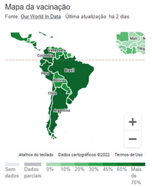
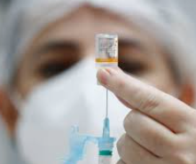
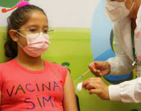
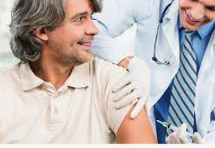

|  | Mapa divulgado de vacinações por estado. |
| No dia 28/05/2022, foi divugada a quantidade de pessoas já vacinadas no brasil. | |
| 28/05/2022 ás 11:12 |
|  | Prefeitura do estado de São paulo anuncia nova campanha de vacinação. |
| A Prefeitura atualizou as estratégias da campanha de vacinação. Agora, todas as doses já podem ser aplicadas sem a necessidade de agendamento prévio, bastando somente o cadastro no site Saúde Digital e os pré-requisitos necessários, como idade e intervalo mínimo entre as doses. |
|
| 22/05/2022 ás 13:35 |
|  | Vacinação para Crianças com até 5 anos. |
| Crianças com Covid-19 só devem receber o imunizante 30 dias após o início dos sintomas ou do resultado positivo em casos de assintomáticos. Em casos negativos para o coronavírus, mas com quadro de síndrome gripal, o recebimento da vacina deve ocorrer após 48 horas do desaparecimento dos sintomas |
|
| 22/05/2022 ás 08:12 |
|  | Vacinação para Adultos |
| Adultos e adolescentes: ao comparecer ao centro de vacinação, é necessário apresentar os documentos originais: identidade (com foto), CPF, Cartão Nacional de Saúde (CNS) e comprovante de residência atualizado. No caso de segunda dose, levar também o cartão de vacinação. Os adolescentes que não possuem RG poderão levar a certidão de nascimento junto a um documento com foto, que pode ser o bilhete único ou a carteira estudante. |
|
| 18/05/2022 ás 13:35 |